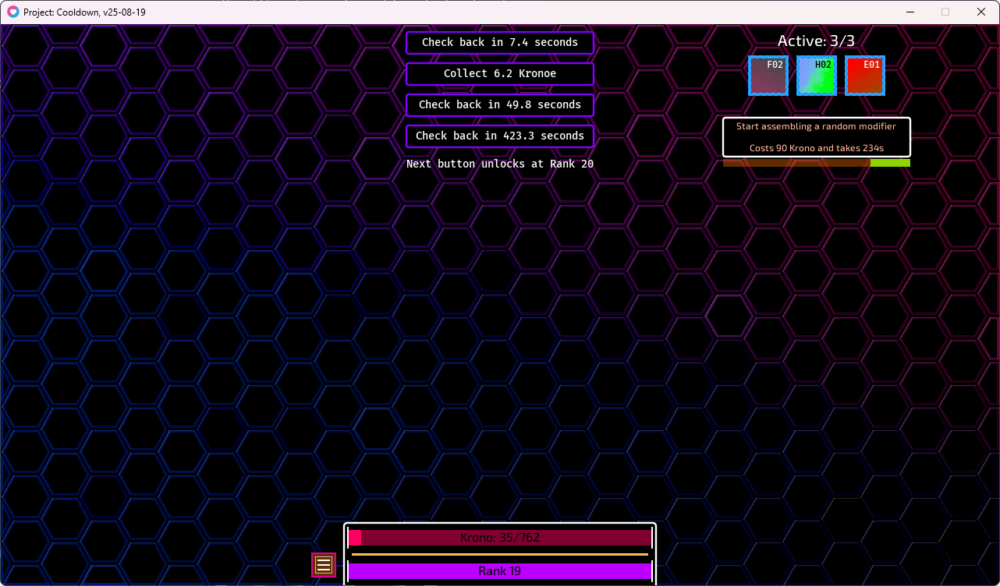

Nox Tower Defense
A semi-idle twist on tower defense where your entire strategy hinges on just one tower. You invest in upgrades, unlock abilities, and evolve your lone defense strong enough to survive waves of enemies — all while passive income and idle mechanics ease the grind. Built in Lua using the LOVE2d framework.
Last update: Oct 2025
GitHub Page

Project: Cooldown
Project Cooldown is an idle / incremental game in Lua (using LOVE2D) that takes inspiration from Check Back (by Demonin) and its mods. You tap, wait, unlock modifiers, and build up power over time — even when you're not actively playing — so your progress hums along in the background.
Last update: Aug 2025
GitHub Page

NoxOS
NoxOS is a meta / simulation game about evolving an operating system through versions. There are 32 possible OS versions (5 developed, 27 not yet) and currently 15 game releases (8 considered stable). The latest stable version is v0.3.2 (released June 27, 2024). It's heavily inspired by Progressbar95.
Last update: Sep 2024
GitHub Page
Data Incremental
Data Incremental is a Lua + LOVE-engine idle/strategy game where your goal is to accumulate data and unlock ever more advanced technologies as you climb through orders of magnitude. You start small, storing bits and bytes, and gradually master systems like multiprocessing, efficiency upgrades, data cascades, binary encoding, etc., eventually pushing your empire of information toward absurd scale.
Last update: Oct 2023
GitHub Page